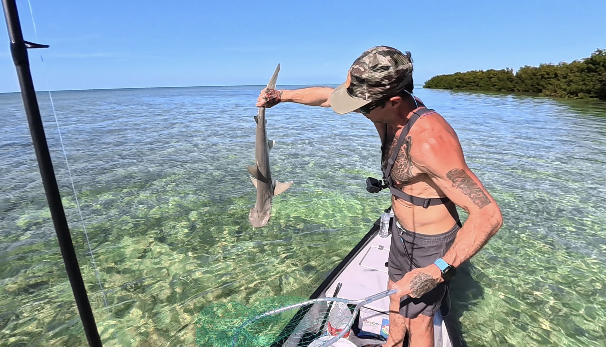

Captain
Erik
Big Pine Key, FL
The Gheenoe
Prime Window Today
Loading...
Calculating...
schedule
Wind
—
Tide
—
Air Temp
—
warning
12-Hour Safety Forecast
Updating...
crisis_alert
Wind Now
—
—
Storm Risk
—
—
Wind Trend (Next 12 Hrs)
Now
+6h
+12h
Best Spots Today
Loading spots...
Why This Window
waves
Tide
Loading tide data...
wb_twilight
Sunrise Advantage
Low light gives predators cover on the flats. Fish feed aggressively in the first two hours after sunrise.
thermostat
Water Temp
Loading water temp...
brightness_2
Moon Phase
Loading lunar data...